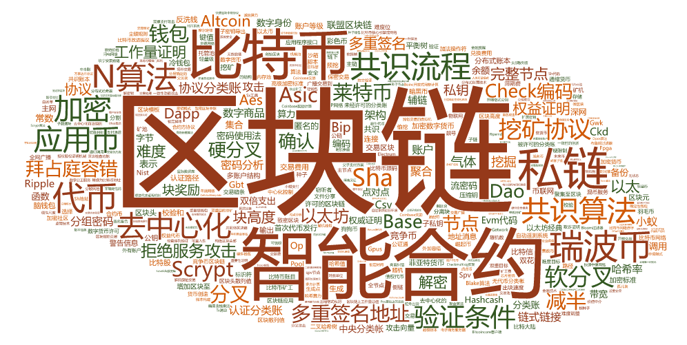

区块链3-术语集

术语资料主要来源
术语list
从以上两篇文章中提取出来的的术语列表，抛开了多余的介绍和其他文本，可以用于直接生成词云图或关系图（类似本页面最上面的图）。
词云图在线生成站点：Word Art
注：要生成带中文的词云图，需要添加中文字体，一般的ttf格式即可
区块链领域常见术语大盘点list
区块链
比特币
点对点
智能合约
共识流程
地址
协议分类账
Altcoin
认证分类账
ASIC
分组密码
块高度
块奖励
中央分类帐
链式链接
密码
确认
联盟区块链
密码分析
加密数字货币
密码使用法
dApp
DAO
解密
加密
以太
以太坊
以太坊经典
EVM代码
数字商品
数字身份
分布式账本
难度
双倍支出
菲亚特货币
分叉
气体
减半
硬分叉
Hashcash
哈希率
首次代币发行
分类账
莱特币
挖掘
多重签名
节点
完整节点
被许可的分类帐
被许可的区块链
私钥
权威证明
权益证明
工作量证明
协议
Ripple
Scrypt
SHA 256
软分叉
流密码
代币
无代币分类帐
交易区块
交易费用
未经许可的分类账
钱包
区块链相关术语（中英对照）list
account level(multiaccountstructure)(账户等级（多账户结构）)
accounts(账户)
adding blocks to(增加区块至)
addition operator(加法操作符)
addr message(地址消息)
Advanced Encryption Standard(AES)(高级加密标准(AES))
aggregating(聚合)
aggregating into blocks(聚集至区块)
alert messages(警告信息)
altchains(竞争币区块链)
altcoins(竞争币)
AML(反洗钱)
anonymity focused(匿名的)
antshares(小蚁)
appcoins(应用币)
API(应用程序接口)
App Coins(应用币)
architecture(架构)
assembling(集合)
attacks(攻击)
attack vectors(攻击向量)
Autonomous Decentralized Peer-to-Peer Telemetry(去中心化的 p2p 自动遥测系统)
auxiliary blockchain(辅链)
authentication path(认证路径)
B()
backing up(备份)
balanced trees(平衡树)
balances(余额)
bandwidth(带宽)
Base58 Check encoding(Base58Check编码)
Base58 encoding(Base58编码)
Base-64 representation(Base-64表示)
BFT（Byzantine Fault Tolerance）(拜占庭容错)
binary hash tree(二叉哈希树)
BIP0038 encryption(BIP0038加密标准)
bitcoin addressesvs.(比特币地址与)
bitcoin core engine(比特币核心引擎或网络)
bitcoin ledger(比特币账目)
bitcoin network(比特币网络)
Bitcoin Network Deficit(比特币网络赤字)
Bitcoin Miners(比特币矿工)
Bitcoin mixing services(混币服务)
Bitcoin source code(比特币源码)
BitLicense(数字货币许可)
BIP152(比特币改进提议)
Bitmain(比特大陆)
Bitmessage(比特信)
BITNET(币联网)
Bitshares(比特股)
BitTorrent(文件分享)
Blake algorithm(Blake算法)
block chain apps(区块链应用)
block generation rate(出块速度)
block hash(区块散列值)
block header hash(区块头散列值)
block headers(区块头)
block height(区块高度)
blockmeta(区块元)
block templates(区块模板)
blockchains(区块链)
bloom filtersand(布鲁姆过滤器(bloom过滤器))
BOINC open grid computing(BOINC开放式网格计算)
brain wallet(脑钱包)
broad casting to network(全网广播)
broad casting transactions to(广播交易到)
bytes(字节)
Byzantine fault-tolerant(拜占庭容错)
C()
call(调用)
CCVM（Cross Chain Virtual Machine）(跨链交易的虚拟机)
centralized control(中心化控制)
chaining transactions(交易链条)
chainwork(区块链上工作量总值)
Check Block function(Bitcoin Coreclient)(区块检查功能(BitcoinCore客户端))
CHECKMULTISIG implementation(CHECKMULTISIG实现)
CheckSequenceVerify (CSV)(检查序列验证/CSV)
checksum(校验和)
child key derivation(CKD) function(子密钥导出(CKD)函数)
child private keys(子私钥)
Child Pays For Parent，CPFP(父子支付方案)
coinbase reward calculating(coinbase奖励计算)
coinbase rewards(coinbase奖励)
coinbase transaction(coinbase交易)
cold-storage wallets(冷钱包)
Compact block(致密区块)
Compact block relay(致密区块中继)
colored coins(彩色币)
compressed keys(压缩钥)
compressed private keys(压缩格式私钥)
compressed public keys(压缩格式公钥)
computing power(算力)
connections(连接)
consensus(共识)
Consensus Ledger(共识账本)
consensus attacks(一致性功能攻击)
consensus innovation(一致性的创新)
consensus plugin(共识算法)
Confidential Transactions(保密交易)
constant(常数)
constructing(建造)
constructing block headers with(通过…构造区块头部)
converting compressed keys to(将压缩地址转换为)
converting to bitcoin addresses(转换为比特币地址)
conversion fee(兑换费用)
consortium blockchains(共同体区块链)
counterparty protocol(合约方协议)
Counterparty(合约币)
creating full blockchains on(建立全节点于)
creating on nodes(在节点上新建)
crypto community(加密社区)
crypto 2.0 ecosystem(加密2.0生态系统)
cryptocurrency(加密货币)
Cunning hamprime chains(坎宁安素数链)
currency creation(货币创造)
D()
Darkcoin(暗黑币（译者注：现已更名为达世币Dash）)
data structure(数据结构)
DAO(Decentralized Autonomous Organization)(去中心化自治组织)
Debt Token(债权代币)
decentralized(去中心化)
decentralized consensus(去中心化共识)
decentralised applications(去中心化应用)
decentralised platform(去中心化平台)
decoding Base58Check to/from hex(Base58Check编码与16进制的相互转换)
decoding to hex(解码为16进制)
deep web(深网)
Decode Raw Transaction(解码原始交易)
deflationary money(通缩货币)
delegated proof of stake(授权股权证明机制)
demurrage currency(滞期费)
denial of service attack(拒绝服务攻击)
detached block(分离块)
deterministic wallets(确定性钱包)
DEX ：distributed exchange(去中心化交易所)
difficulty bits(难度位)
difficulty retargeting(难度调整)
difficulty targets(难度目标)
digital notary services(数字公正服务)
digital currency(数字货币)
distributed hash table(分布式哈希表)
Distributed Autonomous Corporations Runtime System（DACRS）(自治系统运行环境)
Distributed Ledger Technology（DLT）(分布式账簿技术)
domain name service(DNS)(域名服务(DNS))
double-spend attack(双重支付攻击)
double spend(双花)
Dogecoin(狗狗币)
DoS(denial of service) attack(拒绝服务攻击)
DPOS(权益代表证明机制/DPOS算法（POS基础上的改良）)
dual-purpose(双重目标)
dual-purpose mining(双重目的挖矿)
dust rule(尘额规则（极其小的余额）)
E()
eavesdroppers(窃听者)
ecommerce servers keys for…(电子商务服务器…的密钥)
ECDSA(椭圆曲线数字签名算法保障)
Eigentrust++ for nodes(用于节点的Eigentrust++技术)
electricity cost(电力成本)
electricity cost and target difficulty(电力消耗与目标难度)
Electrum wallet(Electrum 钱包)
ellipticcurve multiplication(椭圆曲线乘法)
Emercoin(EMC)(崛起币)
encoding/decoding from Base58Check(依据Base58Check编码/解码)
encrypted(加密)
encrypted private keys(加密私钥)
Equity Token(权益代币)
Ethereum(以太坊)
External owned account（EOA）(外有账户)
ether(以太币)
extended key(扩展密钥)
extra nonce solutions(添加额外nonce的方式)
extraBalance(附加余额)
F()
Factom(公证通)
fault tolerance(外加容错)
Feathercoin(羽毛币)
fees(手续费)
FRN(快速中继网络)
FBRP(快速区块中继协议)
FEC(向前纠错)
field programma blegatearray(FPGA)(现场可编程门阵列(FPGA))
Financial disintermediation(金融脱媒)
fintech(金融技术)
fork attack(分叉攻击)
forks(分叉)
fraud proofs(欺诈证明)
full nodes(完整节点;全节点)
G()
generating(生成)
generation transaction(区块创始交易)
generator point(生成点)
genesis block(创始区块)
GetBlock Template(GBT)mining protocol(GetBlockTemplate(GBT)挖矿协议)
gettingon SPV nodes(获取SPV节点)
GetWork(GWK) mining protocol(GetWork(GWK)挖矿协议)
graphical processing units(GPUs)(图形处理单元(GPUs))
GUID(全域唯一识别元)
H()
hackers(黑客)
halving(减半)
hardware wallets(硬件钱包)
hard fork(硬分叉)
hard limit(硬限制)
hash(哈希值)
Hardware Security Modules（HSM）(硬件安全模块)
hashing powerand(哈希算力)
hashcash(现金算法)
HD wallet system(分层确定性钱包系统)
header hash(头部散列值)
heavyweight wallet(重量级钱包)
Hierarchy deterministic(分层确定的)
honesty(诚信算力)
hyperledger(超级账本)
human readable format(人类可读模式)
I()
identifiers(标识符)
immutability of blockchai(区块链不可更改性)
implementing in Python(由Python实现)
in block header(在区块的头部)
independent verificatio(独立验证)
innovation(创新)
inputs(输入)
Internet of Things(物联网)
instamine(偷挖)
Invertible Bloom Lookup Table(IBLT)(可逆式布鲁姆查找表)
Invalid Numerical Value(无效数值)
IPDB(星际数据库)
K()
key formats(密钥格式)
key-value(键值)
KYC(了解你的客户)
L()
Level DB database(Google)(LevelDB数据库(Google))
light weight(轻量级)
linking blocks to…(将区块连接至…)
linking to blockchain(连接至区块链)
Lightning network(闪电网络)
linear scale(线性尺度)
Litecoin(莱特币)
lock time(锁定时间)
locking scripts(锁定脚本)
log scale(对数单位)
M()
mainnet(主网)
managed pools(托管池)
mastercoin protocol(万事达币协议)
masternode(主节点)
memorypool(mempool)(内存池)
Merkle tree(Merkle Hash tree)(二进制的哈希树或者二叉哈希树)
Merkle root(二进制哈希树根)
metachains(附生块链)
mining(挖矿)
mining blocks successfully(成功产(挖)出区块)
mining pools(矿池)
mining rigs(矿机)
micropayment(小额支付)
microblocks(微区块)
modifying private key formats(修改密钥格式)
monetary parameter alternatives(货币参数替代物)
Moore’s Law(摩尔定律)
Moonpledge(月球之誓)
MPC(多方计算)
multi account structure(多重账户结构)
multi-hop network(多跳网络)
multi-signature(多重签名)
multi-signature addresse(多重签名地址)
multi-signature addresses(多重签名地址)
multi-signature scripts(多重签名脚本)
multi-signatureaccount(多重签名账户)
N()
Namecoin(域名币)
native token(原生代币)
navigating(导航)
Network Propagation(网络传播算法)
Network of marketplaces(市场网络)
Nextcoin（NXT)(未来币)
Neoscrypt(N算法)
nested subchains(嵌套子链)
NFC(Near Field Communication)(非接触式)
NIST5(NIST5是一种新算法，由TalkCoin首创)
nodes(节点)
nonce(随机数)
noncurrency(非货币)
nondeterministic wallets(非确定性的)
O()
off-chain(链下)
on full nodes(在全节点上)
on new nodes(在新节点上)
on SPV nodes(在SPV节点)
on the bitcoin network(在比特币网络中)
one-hop network(单跳网络)
OP_RETURN operator(OP_RETURN操作符)
OpenSSL cryptographiclibrary(OpenSSL密码库)
open source of bitcoin(比特币的开源性)
open transaction（OT)(开放交易)
orphan block(孤儿块)
Oracles(价值中介)
OWAS(单向聚合签名)
OTC(over the counter)(场外交易)
outputs(输出)
P()
P2P Pool(P2Pool（一种点对点方式的矿池）)
parent blocks(父区块)
parent blockchain(主链)
paths for(路径)
Pay to script hash (P2SH)(P2SH代码；脚本哈希支付方式)
payment channel(支付通道)
P2SH address(P2SH地址；脚本哈希支付地址)
peer-to-peer networks(P2P网络)
physical bitcoin storage(比特币物理存储)
PIN-verification(芯片密码)
plot/chunks of data(完整数据块)
pool operator of mining pools(矿池运营方)
post-trade(交易后)
post-trade processing(交易后处理)
POI: proof of importance(重要性证明（ NEM提出来的一种共识算法）)
Ppcoin(点点币)
Premine(预挖)
priority of transactions(交易优先级)
Primecoin(素数币)
proof of stake(权益证明)
proof of work(工作量证明)
proof-of-work algorithm(工作量证明算法)
proof-of-work chain(工作量证明链)
propagating transactions on(交易广播)
protein folding algorithms(蛋白质折叠算法)
public child key derivation(公钥子钥派生)
public key derivation(公钥推导)
publickeys(公钥)
public blockchain/permissionless blockchain(公链)
private blockchain/permissioned blockchain(私链)
pump and bump(拉升出货)
purpose level(multiaccount structure)(目标层（多帐户结构）)
Python ECDSA library(PythonECDSA库)
R()
random(随机)
random wallets(随机钱包)
raw value(原始价格)
reentrancy(可重入性)
regtech(监管技术)
replay attacks(重放攻击)
RBF:Replace By Fee(费用替代方案)
retargeting(切换目标)
recursive call(递归调用)
RIPEMD160(RIPEMD160一种算法)
Ripple(瑞波币)
risk balancing(适度安保)
risk diversifying(分散风险)
root of trust(可信根)
root seeds(根种子)
S()
sandbox(沙箱)
satoshis(中本聪)
scoops/4096 portions(子数据块)
scriptcons truction(脚本构建)
scriptl anguage for(脚本语言)
Scriptlanguage(脚本语言)
scripts(脚本)
scrypt algorithm(scrypt算法)
scrypt-N algorithm(scrypt-N算法)
Secure Hash Algorithm(SHA)(安全散列算法)
security(安全)
security thresholds(安全阈值)
seed nodes(种子节点)
seeded(种子)
seeded wallets(种子钱包)
selecting(选择)
soft limit(软限制)
Segregated Witness(SegWit)(隔离见证)
SHA256(SHA256)
SHA3 algorithm(SHA3算法)
Shared Permission Blockchain(共享认证型区块链)
shibes(狗狗币粉丝)
shopping carts public keys(购物车公钥)
simplified payment verification (SPV) nodes(简易支付验证（SPV）节点)
simplified payment verification（SPV）wallet(轻钱包)
sidechain(侧链)
signature operations（sigops）(处理签名操作)
signature aggregation(签名集合)
Skein algorithm(Skein算法)
smart pool(机枪池)
smart contracts(智能合约)
solo mining(单机挖矿)
solo miners(独立矿工)
soft fork(软分叉)
spilt(分割)
Stellar(恒星币)
stateless verification of transactions(交易状态验证)
statelessness(无状态)
state machine replication(状态机原理)
storage(存储)
Stratum(STM)mining protocol(Stratum挖矿协议)
structure of(的结构)
sx tools(sx工具)
syncing the blockchain(同步区块链)
system security(系统安全)
Subchains(子链)
T()
taking off blockchain(从区块链中删除)
tainted address(被污染的地址)
taint Analysis(污点分析)
TeleHash(p2p信息发送系统)
timeline(时间轴)
timestamping blocks(带时间戳的区块)
txids(缩短交易标识符)
token(代币)
token system(代币系统)
token-less blockchain(无代币区块链=私链)
transaction fees(交易费；矿工费)
transaction pools(交易池)
transaction processing(交易处理)
transaction validation(交易验证)
transactions independent verification(独立验证交易)
transaction malleability(交易延展性)
tree structure(树结构)
Trezor wallet(Trezor钱包)
Turing Complete(图灵完备)
two-factor authentication(双因素认证)
tx messages(tx消息)
Type-0 nondeterministic wallet(原始随机钱包)
U()
uncompressed keys(解密钥)
unconfirmed transactions(未确认交易)
unspent outputs(未花费输出)
user security(用户安全性)
User Token(用户代币)
UTXO pool(UTXO池)
UTXO set(UTXO集合)
UTXOs(未交易输出)
V()
validating new blocks(验证新区块)
validation(验证条件)
validation(transaction)(校验(交易))
vanity(靓号)
vanity addresses(靓号地址)
vanity-miners(靓号挖掘程序)
verification(验证)
verification criteria(验证条件)
version message(版本信息)
Visualise Transaction(可视化交易)
W()
Wallet Import Format(WIF)(钱包导入格)
wallets(钱包)
white hat attack(白帽攻击)
weak blocks(弱区块)
whitelist(白名单)
wildcard(通配符)
X()
Xthin(极瘦区块)
XRP (Ripple)(瑞波币)
Z()
zero knowledge proof(零知识证明)
zero codehash(零代码哈希)
Zerocoin protocol(零币协议)